Плёнка
Mercedes GLE 450d
Полная оклейка в матовый полиуретан
Вернём кузову блеск, уберём вмятины без покраски, отмоем салон, восстановим фары и защитим плёнкой. Работаем с любыми марками, опыт больше 7 лет.

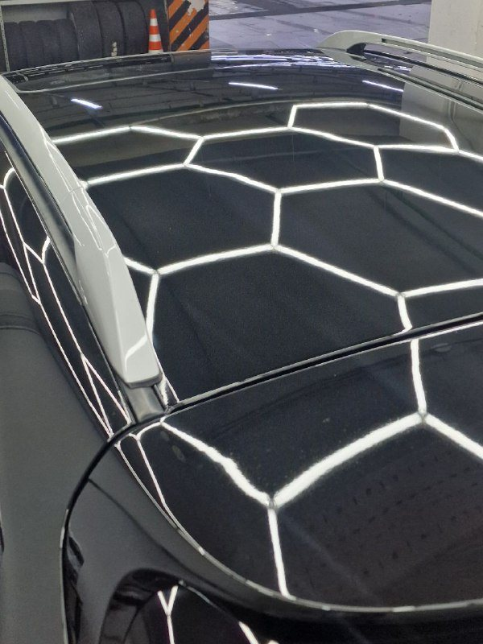
Выберите, что беспокоит. Покажем похожую машину из нашего бокса и что с ней сделали. Цену по фото назовём в чате.
Так Евгений подписывает работы в нашем Telegram-канале. Несколько машин оттуда, нажмите на фото, чтобы рассмотреть.
Полная оклейка в матовый полиуретан
Вытянули крышу после падения дерева, покрасили, абразивная полировка и керамика
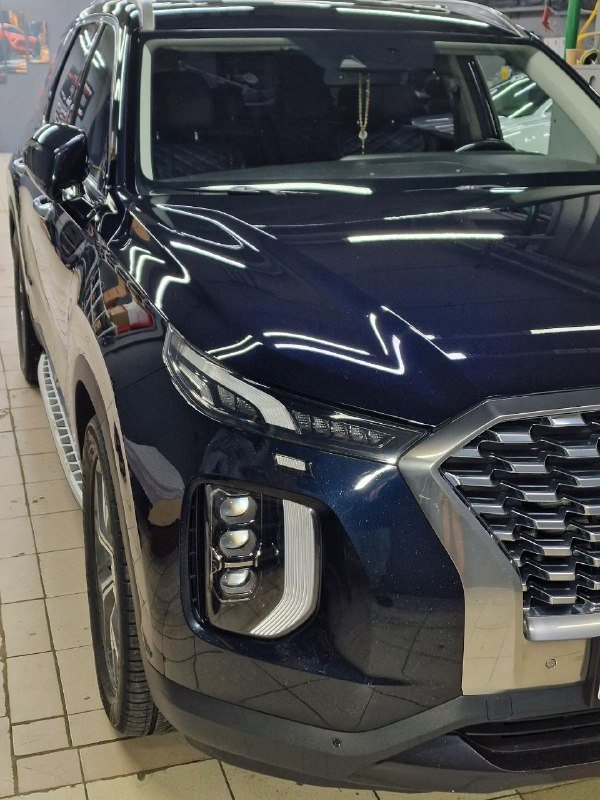
Абразивная полировка и керамика
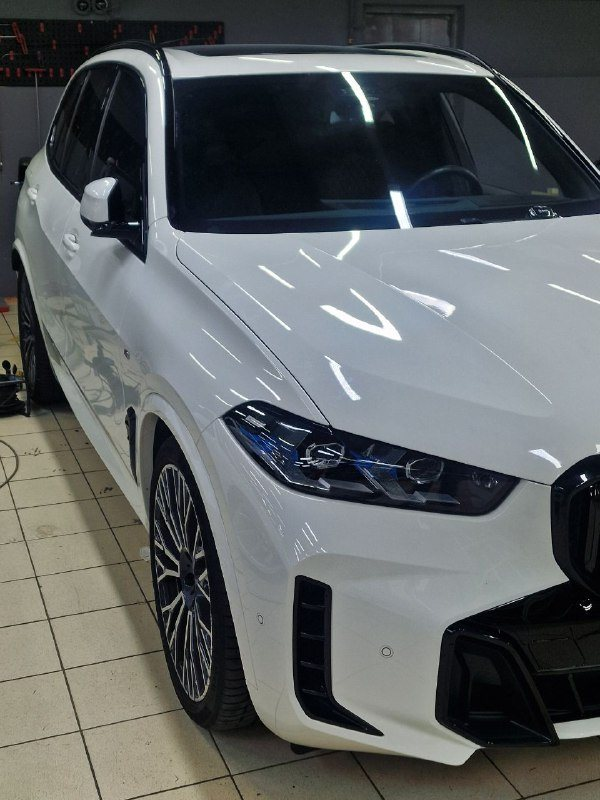
Вмятины без покраски, полировка, керамика
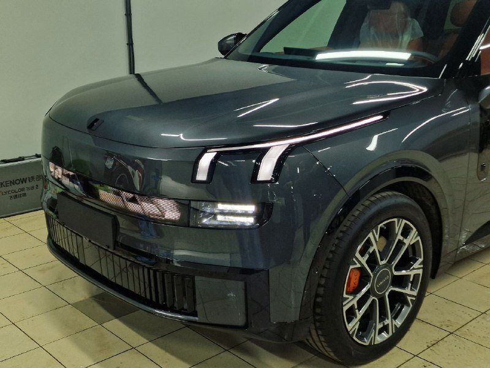
Оклейка всего кузова в чёрный глянец, бронь лобового, русификация всех мониторов
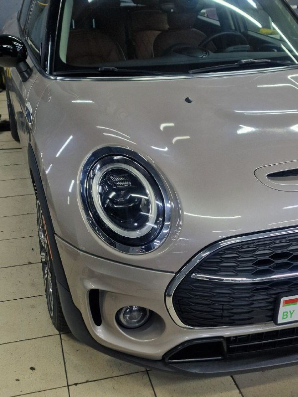
Вмятины без покраски, полировка, керамика
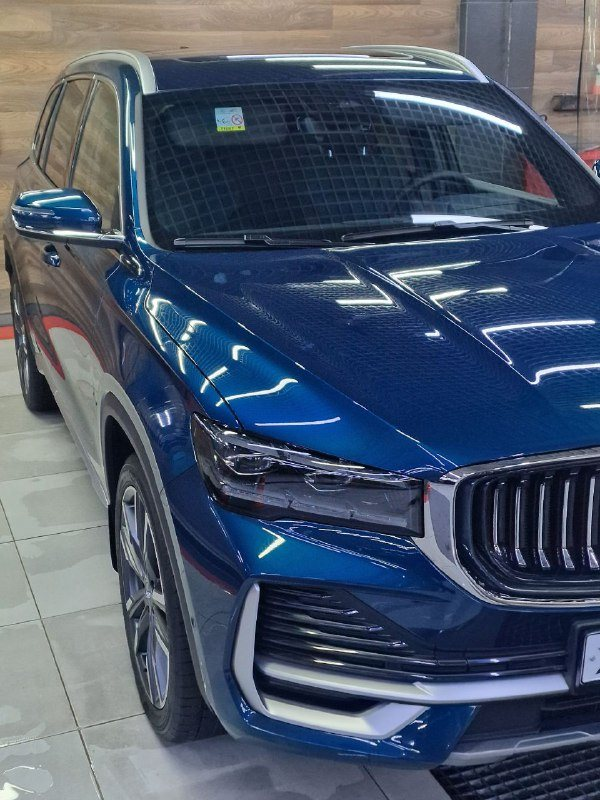
Полировка, керамика, оклейка зон риска
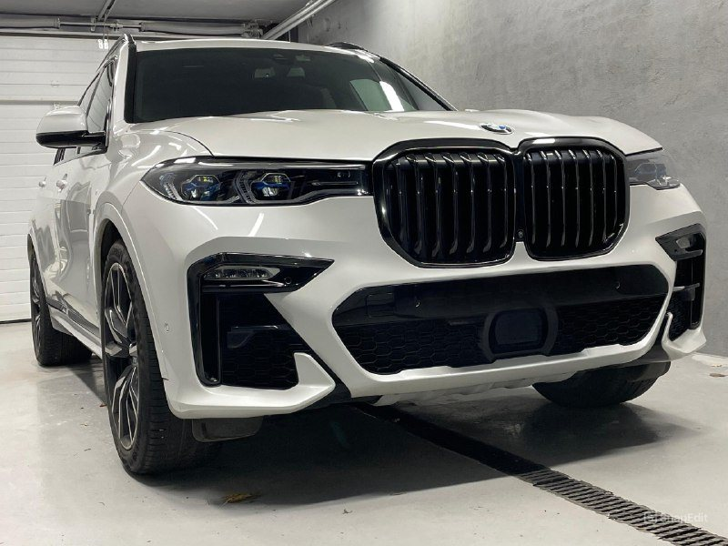
Абразивная полировка
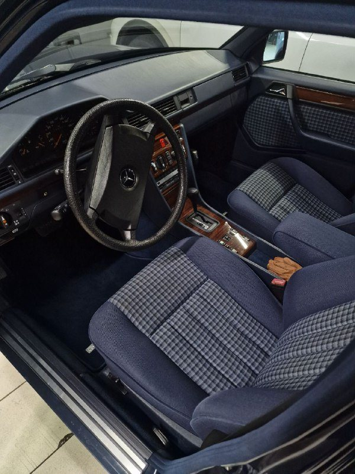
Химчистка салона
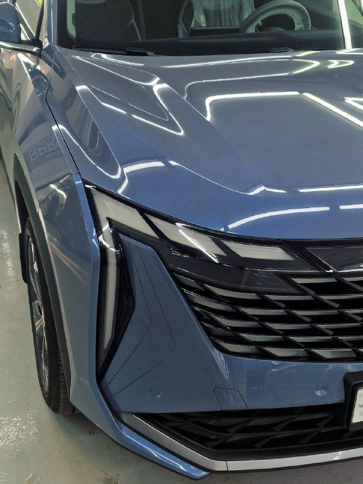
Оклейка зон риска полиуретаном, тонировка задней полусферы LLumar, антидождь
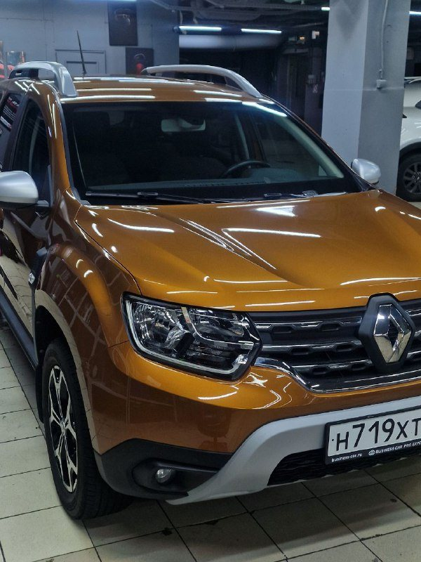
Абразивная полировка
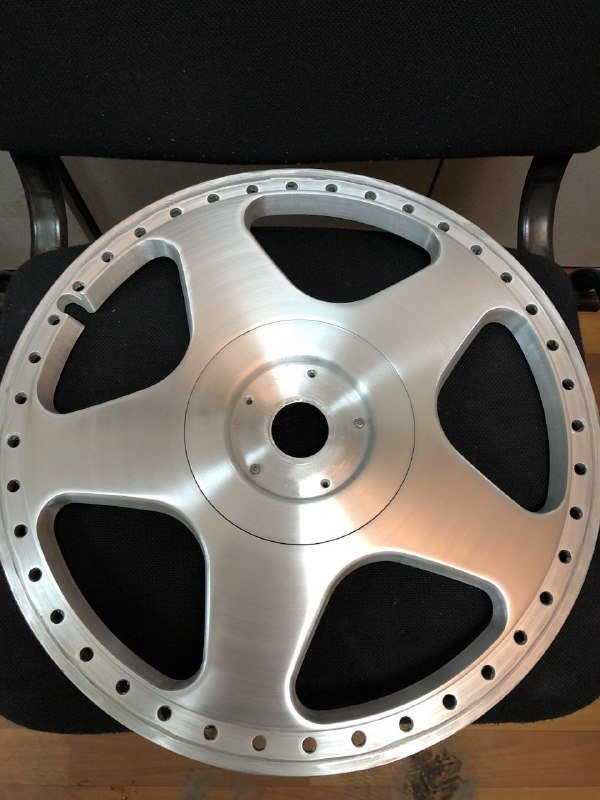
Покраска, реставрация, ремонт бордюрки, алмазная проточка
Цена зависит от машины и состояния. Пришлите фото в чат, назовём сумму до начала работ.
Дооснащение Range RoverФары, рестайлинг, мультимедиа. Отдельный сайт→Цены «от» с Яндекс Карт. Остальное считаем по фото и называем до начала работ.
Покажите, что беспокоит: вмятину, кузов, салон или фары. Подскажем, что поможет, и примерную цену.
Тюменский проезд, есть парковка. Смотрим машину вживую и называем точную цену до начала работ.
Согласовали список и погнали. Пока ждёте, есть кофе и Wi‑Fi.
Смотрим результат вместе при хорошем свете и рассказываем, как ухаживать дальше.